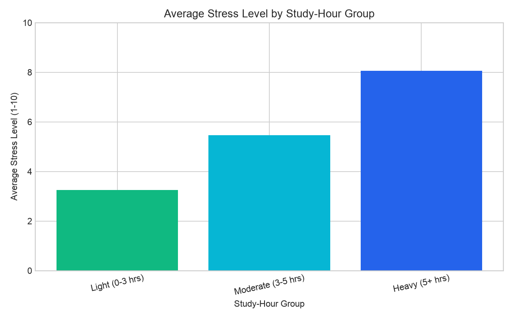
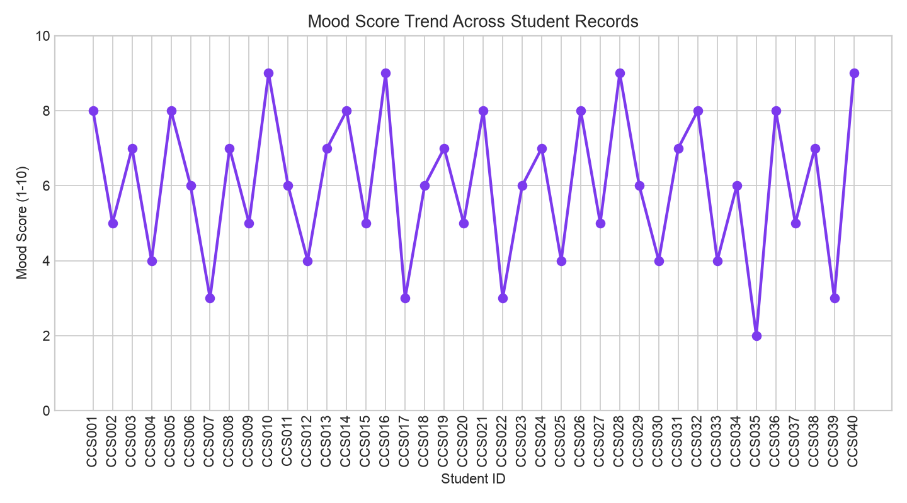
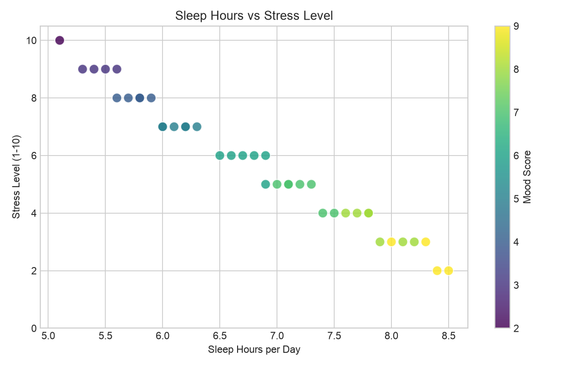
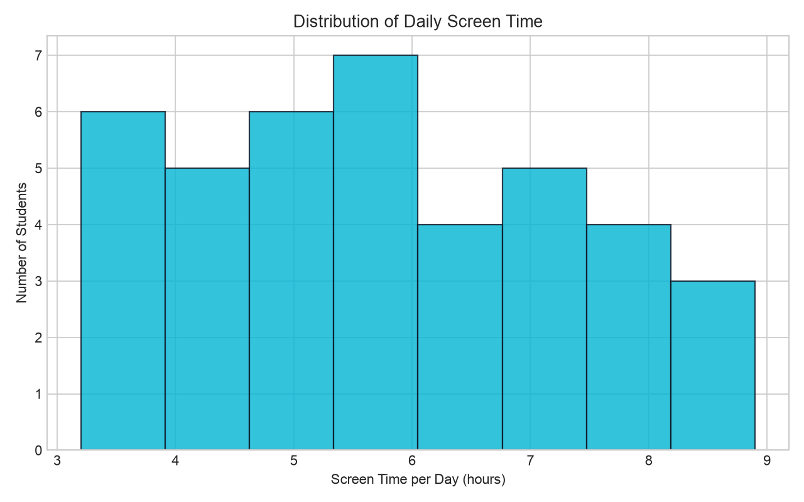
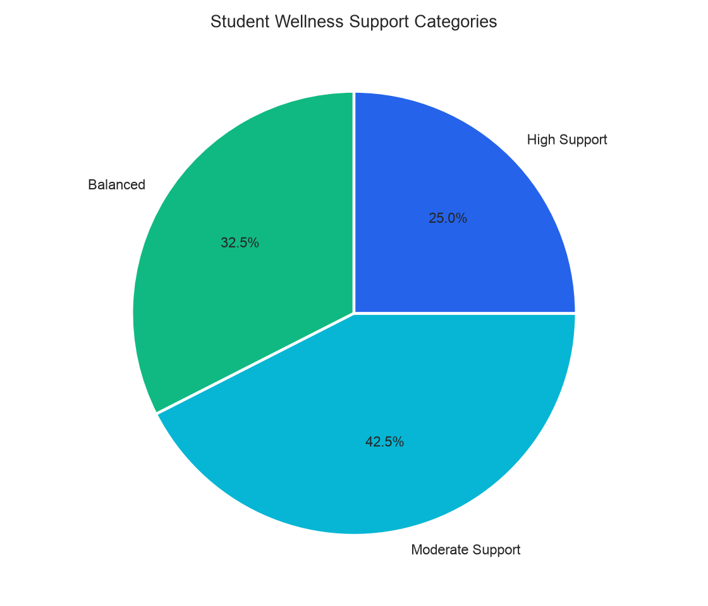

Bar Chart
Average stress level grouped by daily study-hour category.

Practical 4 · Data Visualization
These Matplotlib charts use the CampusCare student wellness dataset with 40 realistic student records covering study hours, sleep, stress, mood, screen time, and exercise.
Average stress level grouped by daily study-hour category.

Mood score trend across all 40 student records.

Sleep hours compared with stress level, colored by mood score.

Distribution of daily screen time among students.

Student wellness support categories based on stress and sleep.
